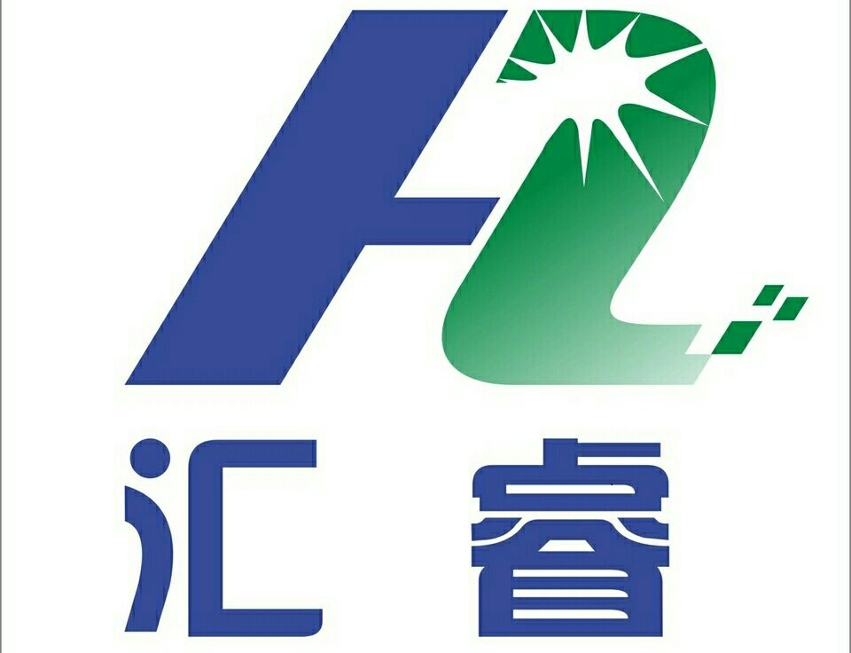

专注眼科医疗 守护清晰视界
深圳前海汇睿生物技术有限公司（品牌名：HuiRayMed）成立于深圳前海，是一家专注于眼科医疗器械研发、生产和销售的创新型企业。
公司秉承"点亮视界，触手可及"的企业使命，致力于通过前沿科技为眼科医疗机构和患者提供高品质的眼科耗材及诊断设备解决方案。
公司总部位于深圳市坪山区生物医药创新产业园，拥有先进的研发实验室和符合GMP标准的眼科医疗器械生产车间。

专注专业，值得信赖
由医疗器械行业资深专家领衔，研发团队拥有多年技术积累和临床实践经验。
严格遵循ISO13485质量管理体系，从研发到生产全流程管控。
从售前咨询到售后支持，提供全周期的专业服务。
保持对前沿技术的敏锐洞察，持续投入研发。
期待与您的合作